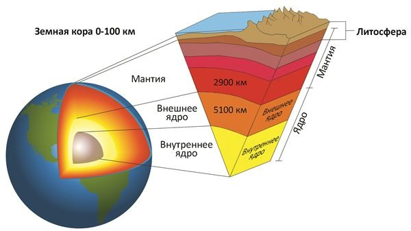

Земля относится к планетам земной группы, и в отличие от газовых гигантов, таких как Юпитер, имеет твёрдую поверхность. Это крупнейшая из четырёх планет земной группы в Солнечной системе, как по размеру, так и по массе. Кроме того, Земля среди этих четырёх планет имеет наибольшие плотность, поверхностную гравитацию и магнитное поле. Это единственная известная планета с активной тектоникой плит. Недра Земли делятся на слои по химическим и физическим (реологическим) свойствам, но в отличие от других планет земной группы, Земля имеет ярко выраженное внешнее и внутреннее ядро. Наружный слой Земли представляет собой твёрдую оболочку, состоящую главным образом из силикатов. От мантии она отделена границей с резким увеличением скоростей продольных сейсмических волн — поверхностью Мохоровичича. Твёрдая кора и вязкая верхняя часть мантии составляют литосферу. Под литосферой находится астеносфера, слой относительно низкой вязкости, твёрдости и прочности в верхней мантии. Значительные изменения кристаллической структуры мантии происходят на глубине 410-660 км ниже поверхности, которая отделяет верхнюю и нижнюю мантию. Под мантией находится жидкий слой, состоящий из расплавленного железа с примесями никеля, серы и кремния - ядро Земли. Сейсмические измерения показывают, что оно состоит из двух частей: твёрдого внутреннего ядра (радиус 1220 км) и жидкого внешнего ядра (радиус 2250 км).
